Ameaças
Uma ameaça é um problema contínuo que vai causar encrenca para os PJs se não for contido.
Quando você perceber ou decidir que algo—um NPC, um monstro, uma situação—vai virar um problema recorrente ou cada vez pior, provavelmente vale a pena escrever isso como ameaça.
Escrever ameaças não é estritamente obrigatório, mas facilita muito a administração conforme o mundo da sua campanha fica mais complexo. Seu livreto de Mestre traz páginas feitas para ajudar você a acompanhar as ameaças.
Nem todo NPC, monstro ou situação precisa ser (ou deve ser) uma ameaça. As aranhas gigantes entre os PJs e as velhas ruínas dos Construtores? Se não vão piorar com o tempo, provavelmente são só um perigo a ser enfrentado se os PJs quiserem explorar as ruínas.
Em outras palavras, não se dê ao trabalho de escrever uma ameaça a menos que saiba que ela vai ser importante.
Eis um exemplo de ameaça escrita por inteiro:
NIA (curinga)
Instinto fazer amizade com aranhas
Menina, tocada pelas aranhas depois da provação com a Mãe das Aranhas.
Sobrinha de Blodwen; filha de Cadoc (veja Conselho da Aldeia).
Nia é um exemplo de NPC que virou ameaça. Ela não é vilã nem sequer um perigo—é uma menininha, sobrinha de Blodwen, alguém que os PJs resgataram—mas o vínculo dela com a Mãe das Aranhas a torna fonte de problemas futuros. Ela é uma ameaça.
Eis outro exemplo:
DEDO-DE-ESPINHO (entidade mágica)
Instinto adquirir
Morava na Tumba do Senhor Verde.
Tentou roubar dos PJs, mas eles o pegaram. Ajudou-os a matar Sajra.
Prometeu a contragosto a Vahid não tentar roubá-los, feri-los nem prendê-los.
Cobiça a Gema da Mente. Tem medo de Rhianna. Acha Caradoc presa fácil. Blodwen lhe deve pela flor que ele deu a ela.
Quando você manda recado a Dedo-de-Espinho por espíritos, aves ou feras, diga quando e onde na Mata gostaria de se encontrar. Na hora e no lugar marcados, role +INT: com 10+, ele aparece; com 7-9, ele aparece, mas o Mestre escolhe 1:
- Ele se sente insultado pela convocação
- Você agora está em dívida com ele
- Uma dívida que ele tinha com você está quitada
Dedo-de-Espinho era um monstro que os PJs encontraram em jogo. Eles o capturaram, se aliaram a ele, foram traídos por ele e arrancaram dele a promessa de deixá-los em paz. Mas ele continua por aí, e é do tipo que guarda rancor.
Ele é uma ameaça.
E um último exemplo:
ANWEN (vilã)
Instinto manter a ordem a qualquer custo
Exilada de Stonetop anos atrás, depois de envenenar gente (os fracos) durante um inverno duro (menos bocas para alimentar). Toca um bar/bordel na Cava de Gordin; tem o dedo em muita coisa. Ropr (fera, manter o favor de Anwen) é o
braço direito dela. Tem um fraco por Iona (curinga, viver com conforto).
Movimentos de Mestre:
- Achar o ponto fraco de alguém
- Sacrificar outra pessoa para avançar um objetivo
- Mandar matar alguém
Anwen ainda não apareceu em cena. Ela foi a resposta de um jogador a "Quem é a pior pessoa que você conhece na Cava de Gordin, e por que ela é tão assustadora?" Ainda não é um problema, mas os PJs estão indo para a Cava de Gordin, e ela com certeza vai ser. Ela e seus lacaios são ameaças.
Escrever ameaças é um jeito de acompanhar pontas soltas e conflitos fervendo, o que ajuda você a retratar um mundo rico e misterioso.
Ameaças oferecem problemas e desfechos ruins para soltar sobre os PJs, facilitando pontuar a vida deles com aventura. E a descrição escrita de uma ameaça facilita retratá-la com integridade, ajudando você a jogar para ver o que acontece.
Quando escrever ameaças
Ameaças são preparação: você as escreve entre as sessões. Ao escrever uma ameaça, você toma decisões reais e vinculantes, que exigem cuidado e reflexão.
Não faça isso durante o jogo.
Especificamente, você deve escrever ameaças…
Depois das apresentações
Releia suas anotações da primeira sessão Começando, procurando problemas estabelecidos pelos jogadores. Escreva-os como ameaças no nível de detalhe que fizer sentido.
Nas apresentações, os jogadores me contaram de um ataque recente dos crinwin, da mãe controladora de Blodwen, Tegwen, e da Gema da Mente. Acrescento tudo aos controles de ameaça (como corja, curinga e entidade sobrenatural), mas espero para dar corpo a eles até saber mais.
Quando As Estações Mudam
O movimento As Estações Mudam às vezes manda você introduzir ou piorar uma ameaça, ou diz que as ameaças se multiplicam. Isso pode levar você a criar uma ameaça nova, que os PJs ainda não encontraram. O tipo da ameaça, o instinto 2 Threat tracker e os presságios sombrios 5 Impending doom vão ajudar a dar corpo ao gancho de qualquer aventura relacionada.
Vahid tirou 7-9 no primeiro As Estações Mudam, o que significa que a primeira aventura vai envolver uma ameaça. Decidi que os crinwin caíram sob o domínio de um swyn (uma cobra grande, hipnótica, de cara de macaco) e que estão roubando crianças para acrescentar à coleção do swyn.
O swyn é a verdadeira fonte do problema, então eu o escrevo como ameaça (um vilão).
Depois de uma sessão
Se alguém introduziu um elemento (NPC, monstro, situação etc.) durante uma sessão, e ele pode causar encrenca depois, escreva-o como ameaça enquanto está fresco na memória. Ou ao menos anote e escreva por inteiro depois. Isso serve de lembrete para trazê-lo de volta em sessões futuras.
Depois da primeira aventura, os PJs voltaram para explorar a tumba antiga e Blodwen perturbou o espírito do Senhor Verde mumificado sepultado ali. Embora ele quase sempre fique na vida após a morte feliz que construiu, com certeza pode causar problemas aos PJs mais adiante.
Escrevo-o como ameaça (uma entidade mágica).
Ao preparar uma aventura
Quando você simplesmente sabe que uma ameaça nova vai aparecer, e já tem uma noção de como ela é, é boa ideia escrevê-la antes da próxima sessão. Isso pode acontecer quando os jogadores dizem que vão fazer X e você sabe que fazer X significa topar com Y, e Y cheira a encrenca. Ou pode acontecer quando você encerra uma sessão num gancho de suspense (como uma rolagem ruim do lar, ou algo assustador se aproximando) e, entre as sessões, decide introduzir uma ameaça nova.
No fim da última sessão, os PJs (bom, Vahid) falaram em ir ao Lago das Três Assembleias achar parte do corpo da Gema da Mente. Acho que seria legal ter um grupo do Povo das Colinas dedicado a manter as pessoas longe dos lagos e a manter contidos os horrores das águas. Dou a eles o nome de A Mão Branca e os escrevo como ameaça (uma instituição).
Escrevendo uma ameaça
Para escrever uma ameaça, siga estes passos.
Os passos mais importantes vêm primeiro; os últimos são opcionais.
1) Dê à ameaça um nome e um tipo.
2) Acrescente-a ao controle de ameaças adequado.
3) Dê a ela um instinto, se ainda não tiver.
4) Escreva uma descrição rápida, incluindo ameaças e NPCs relacionados.
5) Se ela tiver impulso: escreva a catástrofe iminente e os presságios sombrios.
6) Opcional: escreva algumas perguntas de apostas.
7) Opcional: escolha ou escreva movimentos de Mestre para definir melhor o comportamento/as capacidades dela.
8) Opcional: escreva movimentos de jogador personalizados.
1 Nome e tipo
Dê à sua ameaça um nome direto, que a distinga com facilidade de outras ameaças que você já acompanha.
Toda ameaça também tem um tipo, que descreve a natureza fundamental dela, seu lugar no mundo e na história em curso. Há oito tipos de ameaça, descritos nas páginas a seguir.
Em geral vai ser óbvio a que tipo uma ameaça nova pertence. Se não for, dê uma olhada nos movimentos de cada tipo e escolha o que melhor se encaixa.
Tipos de ameaça em jogo
Cada tipo de ameaça vem com uma série de movimentos de Mestre, que refletem como aquele tipo costuma causar encrenca. Você pode usar os movimentos especiais de uma ameaça sempre que ela estiver envolvida, em cena ou fora dela. Você não fica limitado a esses movimentos—pode, claro, continuar usando todos os seus movimentos padrão de Mestre, como revele uma verdade indesejada ou coloque-os em apuros—mas os movimentos de ameaça são ótima inspiração para o modo como aquele tipo age.
Para a nossa primeira aventura, decidi que um swyn se mudou para (ou emergiu de?) umas ruínas dos Construtores na Grande Mata. Ele pôs os crinwin das redondezas sob seu controle hipnótico, e eles vêm raptando crianças para a coleção do swyn.
Os swyn eram originalmente criações dos Senhores Verdes, cujos nomes todos têm um ar eslavo. Começo com "Tajra", ajusto um pouco e escrevo "Sajra, o Swyn" como nome dele.
Sajra, o Swyn, é uma cobra grande e hipnótica, de cabeça de macaco, narcisista, colecionadora de gosto exigente, capaz de transformar os de vontade fraca em servos bajuladores. Olhando a lista de tipos de ameaça, penso por um instante em fazer dele uma entidade mágica, mas não parece certo. Não, ele é bem claramente um vilão.
tipo de ameaça
Aflição
Aflições não são pessoas, monstros nem coisas tangíveis. São comportamentos, circunstâncias ou condições que fazem as pessoas sofrer, as põem em conflito ou simplesmente as deixam preocupadas e aflitas.
Aflições podem afetar só um indivíduo ou dois (até um PJ específico), um grupo, uma população ou até uma região inteira.

Movimentos de Mestre para aflições:- Piorar ou acelerar
- Espalhar-se para outros/puxar outros para dentro
- Sofrer mutação, assumir forma/aspecto novo
- Corroer alguma coisa/alguém
- Tirar de alguém a honra/a dignidade
- Levar alguém ao desespero
- Justificar egoísmo, negligência
- Criar uma cisão entre as pessoas
- Causar ilusão, teimosia, tolice
- Semear pânico ou desespero
- Provocar escassez, açambarcamento
- Provocar violência, ódio, culpabilização
Exemplos de aflições:
- A varíola negra (Instinto infectar e se espalhar)
- A briga de Braith com Thecla (Instinto fazer as pessoas tomarem partido)
- A seca (Instinto esgotar recursos)
- A mancha de mercúrio (Instinto causar ilusões)
- "O lugar de mulher" (Instinto impor limites, a todo mundo)
- O ressentimento contra o Povo das Colinas (Instinto impedir a cooperação)
- O tráfico de escravos (Instinto negar a humanidade) tipo de ameaça
Fera
Feras são monstros, animais ou NPCs movidos por necessidade e instinto básicos.
Na maioria das vezes são feras de verdade (naturais ou não). Podem ser espertas, talvez tão espertas ou mais que a maioria das pessoas, mas vivem seguindo o estômago, o cio ou o próprio ego enorme e burro.
Uma ameaça do tipo fera pode refletir uma criatura única e específica, uma família/matilha/manada, ou até uma espécie inteira.
 Movimentos de Mestre para feras:
Movimentos de Mestre para feras:
- Aparecer onde não é bem-vinda
- Espreitar ou perseguir a presa
- Proteger o lar ou a família
- Fazer demonstração de força, agressividade
- Construir ou ampliar um ninho/covil/toca
- Modificar o ambiente
- Fugir, entrar em pânico ou enfurecer-se
- Consumir alguma coisa (ou alguém)
- Crescer ou diminuir, em tamanho ou número
Exemplos de feras:
- Os ursos-das-cavernas (Instinto encher a barriga, proteger os filhotes)
- A manada de bisões, protegida por um pacto com os PJs (Instinto agir com impunidade)
- Grigor Racha-Pedra (Instinto garantir que todos saibam o quanto ele é incrível)
- Os frythrancs (Instinto dominar seu território)
- O enxame de nailadd (Instinto procriar e se espalhar)
- Orub, o Hagr (Instinto moldar compulsivamente o ambiente) tipo de ameaça
Instituição
Instituições são pessoas, grupos ou cargos com poder dentro de uma comunidade (ou de várias). Podem ser coisas formais, como um culto ou um governo, ou apenas posições de respeito (como um conselho de anciãos). Uma instituição muitas vezes tem um líder específico, mas nem sempre.
Uma instituição transcende os indivíduos que a compõem, e o instinto dela reflete a finalidade ou o comportamento da instituição como um todo. Mas ela age por meio de indivíduos, em geral os interessados em manter sua influência.
 Movimentos de Mestre para instituições:
Movimentos de Mestre para instituições:
- Influenciar a opinião pública
- Pôr alguém no seu lugar
- Mudar uma regra, lei ou costume
- Obter alavancagem, recursos, influência
- Denunciar alguma coisa ou alguém
- Apoiar um curso de ação
- Recrutar novos membros ou lacaios
- Brigar entre si
- Trocar de liderança
- Negociar um acordo ou tratado
- Mandar outra pessoa fazer o trabalho sujo
Exemplos de instituições:
- O sacerdócio de Aratis (Instinto preservar a civilização, a qualquer custo)
- O Conselho de Marshedge (Instinto manter as coisas como estão)
- O Culto de Azm Har (Instinto acumular conhecimento, poder, pessoas)
- O conselho da aldeia recém-formado (Instinto manter os PJs sob controle)
- A União Ferrita (Instinto minar o controle dos Chefes) tipo de ameaça
MacGuffin
MacGuffins são coisas—objetos, lugares, até segredos—que provocam conflito. Um MacGuffin pode ter poder de causar problemas por si só, ou pode ser simplesmente algo valioso que faz as pessoas brigarem por ele.
Se há uma coisa no seu jogo que você acha que é fonte de problemas, provavelmente é um MacGuffin.
Ao escolher um instinto para um MacGuffin, foque em como ele causa encrenca, não no que ele faz. O cata-vento de etério ajusta o clima, mas é uma ameaça porque os outros o cobiçam.
Movimentos de Mestre para MacGuffins:
- Revelar um segredo
- Chamar atenção para si
- Apontar para outra coisa
- Gerar inveja/medo/discórdia
- Pesar muito, virar um fardo
- Ser alvo de roubo
- Sumir
- Cumprir sua função, sem se importar
- Falhar no pior momento possível
- Deixar sua marca em alguém ou em alguma coisa
- Tornar-se algo maior, ou menor
Exemplos de MacGuffins:
- O cofre de artefatos da Crônica (Instinto abrigar maldade)
- A Árvore do Saber de Yevena (Instinto revelar segredos perigosos)
- A Espada Saciada de Sangue (Instinto incentivar a violência)
- O cata-vento de etério (Instinto despertar inveja) tipo de ameaça
Entidade mágica
Entidades mágicas incluem espíritos, muitos
Fae, as Coisas de Baixo, até deuses ou seus agentes. São seres que vivem e respiram magia e poder, para quem preocupações comuns como comida e abrigo são alheias ou supérfluas.
Entidades mágicas muitas vezes estão presas a limitações e leis estranhas, aparentemente arbitrárias. Em geral precisam agir sobre o mundo de modo sutil ou por intermediários.
 Movimentos de Mestre para entidades mágicas:
Movimentos de Mestre para entidades mágicas:
- Espionar alguém, sem ser vista/de longe
- Sentir anseios/emoções poderosos
- Aparecer em vislumbres, sonhos, visões
- Oferecer serviço, segredos, poder
- Exigir um juramento ou sacrifício
- Lançar uma maldição
- Torcer uma barganha a seu favor
- Enviar lacaios para fazer o que manda
- Moldar o ambiente, conforme sua natureza
- Perseguir objetivos alheios
- Cultivar rivalidades com poderes semelhantes
- Crescer ou diminuir em força
Exemplos de entidades mágicas:
- Hec'tumel, o Rastejante! Serpente Pálida! A Morte São Seus Olhos! (Instinto sufocar a vida, a esperança e a luz)
- Mãe das Aranhas (Instinto ver seus muitos filhos se espalharem)
- Espírito de ídolo falso (Instinto se libertar do cativeiro)
- Rubor-da-Aurora, o Fae (Instinto ser adorado)
- A sombra de Nikalor (Instinto desfrutar dos prazeres da carne)
- Yevena, Senhora Verde mumificada (Instinto preservar sua gloriosa vida após a morte) tipo de ameaça
Corja
Uma corja é um grupo, com ou sem líder, unido por emoção, sangue ou circunstância, e não por qualquer tipo de propósito ou objetivo comum.
O instinto de uma corja representa como o grupo se comporta como um todo. Um indivíduo qualquer do grupo pode não compartilhar esse instinto e até se opor a ele.
Movimentos de Mestre para corjas:
- Crescer ou se juntar em número
- Reivindicar território ou recursos
- Cair sob o domínio de um (novo) líder
- Passar por turbulência interna
- Fazer demonstração de força/número
- Declarar um inimigo ou uma aliança
- Virar-se contra um dos seus
- Tomar uma posição ou esmagar um grupo mais fraco
- Espoliar, saquear, pilhar, queimar
- Recusar-se a ser controlada/contida
- Dispersar-se, espalhar-se, fugir
Exemplos de corjas:
- Refugiados do Povo das Colinas (Instinto não se encaixar)
- A rebelião dos escravos (Instinto se livrar dos grilhões)
- Os bandidos de Daedre, a Ruiva (Instinto fazer o que bem entenderem)
- Os Sete Irmãos, foliões Fae (Instinto arrastar os outros para o excesso deles)
- A família de Heledd (Instinto fechar fileiras e proteger os seus)
- O culto secreto do ídolo falso (Instinto buscar poder, fortuna e respeito) tipo de ameaça
Vilão
Vilões são simplesmente o que há de pior. São indivíduos com a frieza, a determinação e o poder de tornar a vida horrível para um monte de gente.
Vilões costumam agir por lacaios ou intermediários. Quando se envolvem diretamente, tentam sempre agir de uma posição de força ou de segurança pessoal.
Costumam ter um plano reserva ou dois.
 Movimentos de Mestre para vilões:
Movimentos de Mestre para vilões:
- Agarrar o poder, de forma imprudente
- Ganhar seguidores ou aliados
- Achar o ponto fraco de alguém
- Fazer uma oferta, com condições escondidas
- Exigir concessões, obediência ou respeito
- Fazer ameaças, veladas ou não
- Superar os inimigos em manobra
- Atacar com cautela, guardando reservas
- Atacar sem piedade, quase sem aviso
- Revelar preparativos feitos de antemão
- Sacrificar outra pessoa para avançar um objetivo
- Trair um aliado ou uma confiança
- Fazer um prisioneiro
- Fazer o impensável
Exemplos de vilões:
- Brennan (Instinto manter ou aumentar seu poder)
- Marc, escravagista do Povo das Colinas (Instinto glorificar a si mesmo e ao seu clã)
- Iwan, o babaca que virou feiticeiro (Instinto conseguir o que acha que o mundo lhe deve)
- O Crinwin Sem Olhos (Instinto libertar a Escuridão Viva)
- Mozairog Mente-em-Chamas (Instinto devolver os Fomoraij à glória) tipo de ameaça
Curinga
Curingas são indivíduos que causam encrenca porque são um mistério.
Ou porque os PJs se importam com eles mas não podem confiar neles. Ou porque se opõem aos PJs, mas não são necessariamente más pessoas. Se você sente que um NPC é uma ameaça, mas nenhum dos outros tipos parece se encaixar, faça dele um curinga.
Crie "triângulos" entre os curingas e os PJs. Destaque a velha amizade entre o Brutamontes e Esylt, a fofoqueira da aldeia. Depois faça Esylt minar a autoridade do Juiz, recoste-se e veja a poeira subir.
Movimentos de Mestre para curingas:
- Perseguir o próprio instinto com agressividade
- Mostrar seu valor, ou a falta dele
- Exibir o que traz no coração
- Dar conselho/ajuda, pedidos ou não
- Revelar um segredo, ou guardá-lo a sete chaves
- Chamar atenção para si/para outros
- Aparecer sem avisar
- Agir de um jeito estranho (para os padrões dele)
- Servir de testemunha
- Contar histórias (verdadeiras ou não)
- Fazer/cumprir/quebrar/exigir uma promessa
- Forçar uma questão ou um confronto
- Manter-se firme e se recusar a ceder
Exemplos de curingas:
- Esylt, a fofoqueira da aldeia (Instinto se agarrar a como as coisas "deveriam" ser)
- Afon, Iniciado de Danu tocado pelos Fae (Instinto agir por impulso)
- Andras (Instinto tentar impressionar Rhianna e Blodwen)
- Muirdoc, o bonitão (Instinto brincar com os corações)
2 controle de ameaças
Seu livreto de Mestre tem três páginas duplas para acompanhar ameaças:
- Ameaças do lar, para NPCs ou grupos que moram na aldeia, para aflições que os afetam diretamente ou para qualquer outra coisa localizada ali.
- Ameaças próximas, para ameaças que ficam a até dois dias de viagem de casa.
- Ameaças distantes, para qualquer coisa mais longe que isso.
Escolha o controle correspondente. Acrescente o nome da ameaça, talvez um descritor rápido (p. ex., "Sawyl, caçador ressentido"), seguido do tipo entre parênteses. Trace uma linha do nome até a localização dela no mapa do controle de ameaças.
Enquanto continua a escrever essa ameaça, você pode achar útil acrescentar detalhes-chave ao controle (como o instinto ou talvez uma pergunta de apostas). Mas seja curto e simples. Não vai caber a descrição completa de cada ameaça.
O covil de Sajra é uma ruína dos Construtores a cerca de um dia e meio da aldeia, na Grande Mata, então eu o acrescento ao controle de Ameaças Próximas, do lado direito. Escrevo "Sajra, o Swyn (vilão)" e traço uma linha até um ponto provável na mata.
3 Instinto
Toda ameaça tem um instinto, escrito no formato "<fazer alguma coisa>".
É o comportamento principal que a torna um problema, que a leva a entrar em conflito com os outros ou a feri-los. Se não tivesse esse instinto, ela não seria uma ameaça.
Muitos outros elementos de jogo (como perigos e alguns NPCs) já vêm com um instinto atribuído. Se um elemento desses virar ameaça de longo prazo, ou use o instinto que ele já tem ou escreva um novo, que reflita como o comportamento típico dele mudou ou ficou mais problemático.
Se você está escrevendo uma ameaça que ainda não tem instinto (como uma maldição, ou algum NPC que você acabou de inventar), decida o instinto agora. Veja as descrições de cada tipo de ameaça para exemplos.
Seja qual for o instinto escolhido, anote-o nas suas notas, sob o nome e o tipo da ameaça.
Se achar útil e tiver espaço, acrescente-o ao controle de ameaças também.
Segundo o bestiário, o instinto de um swyn é "alimentar o próprio ego". É perfeitamente horrível e pode levar a todo tipo de comportamento vilanesco (como colecionar crianças). Reaproveito isso como instinto desta ameaça específica.
Instintos em jogo
Use o instinto de uma ameaça para orientar como ela se comporta e reage. Se estiver na dúvida sobre o que uma ameaça faria, olhe o instinto dela. Faça isso.
Ao preparar, use o instinto de uma ameaça para definir o tipo de encrenca que ela causa e para ajudar a enquadrar seus ganchos de aventura.
4 descrição
Anote algumas coisas, incluindo o que parecer importante entre o seguinte:
- Quem ou o que é a ameaça.
- Como ela virou um problema para os PJs, ou como eles a encontraram pela primeira vez.
- As relações dela com NPCs, monstros, pontos de interesse ou outras ameaças.
Essas notas são para você, então escreva só o que lhe for útil, o que quiser relembrar depois. Não gaste tempo nem espaço com o que é óbvio (para você).
Às vezes, ao escrever uma ameaça, você percebe que ela é composta por (ou comanda) ameaças menores. Quando isso acontecer, ou...
- escreva essa outra ameaça por inteiro, como entrada própria no controle de ameaças e nas suas notas; ou…
- escolha um tipo e um instinto para a ameaça menor e inclua-os (entre parênteses) como parte da descrição da ameaça principal.
Ao escrever a descrição de uma ameaça, você pode identificar lacunas—detalhes ainda não estabelecidos. Quando notar uma lacuna, ou preencha agora (com o que fizer sentido) ou decida deixá-la para ser preenchida durante o jogo.
Sei que Sajra é um swyn, e sei o que é um swyn, então não me dou ao trabalho de pôr isso na descrição. Anoto, sim, que ele está morando numa velha ruína dos Construtores, que comanda os crinwin e que coleciona crianças (inclusive o sobrinho de Caradoc).
Enquanto anoto, percebo que tenho algumas lacunas. Qual é a natureza da ruína dos Construtores? Por que Sajra virou ameaça AGORA, se não era ameaça poucos meses atrás? Que outras crianças ele tem?
Decido que ele já raptou uma ou duas outras crianças, mas vou perguntar aos jogadores quem foi levado. Quanto à ruína dos Construtores, gosto muito da ideia de que seja uma tumba-múmia de um dos Senhores Verdes. Então, ou Sajra estava em estase naquela tumba e foi solto há pouco, ou ele acabou de se mudar para lá vindo de algum ponto mais fundo da Mata. Não consigo imaginar um Senhor Verde escolhendo passar a eternidade com uma criatura tão asquerosa e arrogante, então acho que Sajra deve ter se mudado há pouco. O que levanta outra pergunta: o que o trouxe até aqui? Não sinto necessidade de responder isso agora, então deixo como lacuna.
Eu já tinha estabelecido os crinwin
como ameaça (uma corja, instinto: cobiçar)
ao revisar minhas notas depois da criação de personagens. Mas eles são subservientes a Sajra, então não acho que mereçam uma descrição completa (ainda).
Neste ponto, minha descrição está assim:
SAJRA, O SWYN (vilão)
INSTINTO alimentar o próprio ego
Mudou-se há pouco para a tumba arruinada de um Senhor Verde a uns 1½ dia da aldeia (vindo de onde?). Dominou alguns ninhos de crinwin (corja; cobiçar); eles vêm roubando crianças para ele.
Tem Wynfor (sobrinho de Caradoc) e outra criança (quem?).
5 Catástrofe iminente
Se a ameaça tem impulso—se está mudando, perseguindo uma agenda ou piorando—pergunte a si mesmo: que coisa ruim e irrevogável vai acontecer se ela seguir sem ser contida? Essa é a catástrofe iminente dela.
Uma catástrofe iminente não precisa abalar o mundo nem ser terrível. Pode ser algo tão pequeno quanto "Elios deixa Dilwen, e Dilwen nunca perdoa Rhianna".
Claro, uma catástrofe iminente pode abalar o mundo e ser terrível: "Os Fomoraij se erguem e guerreiam contra os Fae." Ou: "O Passo da Barreira cai e as hordas descem para o sul."
O ponto essencial de uma catástrofe iminente é que ela é irreversível. Depois que acontece, não tem volta. Ela vai mudar fundamentalmente a ameaça e o que ela afeta.
Os PJs podem convencer Elios a voltar, mas a relação está quebrada agora e Dilwen continua sem perdoar Rhianna. Podem acabar com a guerra entre Fomoraij e Fae, mas a Grande Mata ainda vai ter sido devastada pelo conflito.
Não pense demais! Simplesmente se pergunte: "Aonde isso vai dar?" e anote. Se não conseguir pensar em nada, tudo bem! Nem toda ameaça tem catástrofe iminente. Se uma catástrofe lhe ocorrer depois, você sempre pode voltar e acrescentá-la à ameaça.
Sajra é recém-chegado à área e está reunindo servos (os crinwin) e colecionando crianças. É movido pelo seu ego terrível e quer ser adorado. Se não for contido, Sajra acabará tentando tomar o controle de Stonetop. E, se os PJs não o detiverem, Sajra vai conseguir. Então a catástrofe iminente dele é: "Subjuga o povo de Stonetop".
presságios sombrios
Estabelecido que uma ameaça tem catástrofe iminente, e qual é, bole de 2 a 4 presságios sombrios. São marcos, passos ao longo do caminho que mostram o avanço da ameaça. Presságios sombrios devem ser coisas concretas e observáveis: coisas que os PJs possam ver, ou de que possam ouvir falar, ou cujos efeitos sintam. E—crucialmente—presságios sombrios devem ser algo a que os PJs possam reagir e que possam eventualmente impedir.
Só para deixar claro: presságios sombrios são coisas que acontecem no mundo em volta dos PJs.
NÃO são coisas que os PJs fazem.
"O povo da aldeia forma um culto" é um bom presságio sombrio; "os PJs descobrem quem são os cultistas" não é. Isso pressupõe que os PJs se importam o bastante para investigar o culto, que investigam e que têm sucesso. Isso não é presságio sombrio—isso é trilho.
Do mesmo jeito, um presságio sombrio pode ser um acontecimento que envolve os PJs, mas nunca deve ditar um desfecho. "Os cultistas atacam os PJs nas casas deles" é ótimo. Dá para supor com segurança que os PJs vão estar em casa em algum momento, e vai saber como o ataque vai correr? "Os cultistas capturam os PJs" não serve, porque pressupõe que os cultistas conseguem capturá-los. De novo, isso é trilho.
Escrevendo presságios sombrios
Se estiver com dificuldade de bolar presságios sombrios, olhe os movimentos de Mestre do tipo da ameaça. Se a ameaça for um monstro ou um seguidor, olhe também os movimentos dele. Esses movimentos representam o que a ameaça faz e como ela causa encrenca. Use-os—junto com o instinto da ameaça—para inspirar seus presságios sombrios.
Eis outro truque: trabalhe de trás para frente. Comece pela catástrofe iminente e pergunte a si mesmo: "Que acontecimento concreto e observável viria logo antes disso? Como seria a situação?" Isso vira o último presságio sombrio. Depois, o que aconteceria antes disso? Esse é outro presságio sombrio.
Continue voltando até chegar a um presságio sombrio que seja visível a partir do estado atual das coisas.
Enquanto escreve os presságios, você provavelmente vai mudar de ideia e talvez até reescrever a catástrofe iminente. Tudo bem! Mas procure manter as coisas soltas; um esboço geral é bem mais útil e flexível que um plano detalhado.
Catástrofes e presságios em jogo
Presságios sombrios e catástrofes iminentes são seus planos. São o que vai acontecer a menos que os PJs intervenham.
Um dos seus movimentos básicos de Mestre é avance rumo à catástrofe iminente. Olhe os presságios sombrios de uma das suas ameaças, marque o próximo e mostre aos PJs algum sinal de que ele ocorreu ou está ocorrendo.
Você pode fazer esse movimento quando…
- As Estações Mudam e a rolagem resulta numa ameaça piorando ou nas ameaças se multiplicando. Na próxima sessão, ou numa cena futura, mostre a eles que um presságio sombrio ou uma catástrofe se concretizou.
- os jogadores tiram 6- e este é o movimento duro que você quer fazer. Muitas vezes você vai fazer isso em movimentos feitos durante o jogo solto Running the Game, mas nem sempre.
- os PJs passaram um tempo longe da área em que uma ameaça está ativa e então voltam a essa área. Mostre a eles como as coisas pioraram.
O primeiro presságio sombrio de Sajra é óbvio para mim: mais crianças desaparecem! Mas não tenho certeza do que vem depois. Quais são os passos entre "os crinwin coletam crianças" e "Sajra subjuga Stonetop"?
Trabalhando de trás para frente: o que aconteceria logo antes de a aldeia ser subjugada?
Olhando os movimentos de Mestre para vilões, vejo exigir concessões, obediência ou respeito e penso: ele daria à aldeia um ultimato! Aceitem-no como mestre, ou até como deus, ou sejam destruídos. Isso combina com o instinto dele (alimentar o próprio ego). Ele consegue transformar os de vontade fraca em servos bajuladores (um dos movimentos de monstro dele), mas quer que a maior parte da aldeia reconheça sua beleza e magnificência e o sirva de bom grado. Certo, o que ele faria antes de dar um ultimato desses? Ele iria ganhar seguidores ou aliados na aldeia. Como faria isso? Possivelmente achando o ponto fraco de alguém e então fazendo uma oferta, com condições escondidas. Mas como? Vilões em geral agem por lacaios ou intermediários... as crianças! Ele vai mandar de volta para casa algumas das crianças roubadas, completamente sob sua influência, e fazê-las espionar e recrutar seguidores.
Isso me dá os seguintes presságios sombrios e catástrofe iminente:
O Mais crianças desaparecem
O Algumas das crianças (enfeitiçadas) voltam
O As crianças recrutam seguidores
O Ele se revela e exige servidão
O CATÁSTROFE IMINENTE: Subjuga a aldeia, matando ou hipnotizando qualquer oposição
6 Apostas (opcional)
Faça a si mesmo algumas perguntas sobre a ameaça e sobre as pessoas afetadas por ela.
Sobre o que você fica pensando? O que quer descobrir em jogo? Essas perguntas viram suas apostas.
Você pode fazer perguntas de apostas sobre PJs ou NPCs, sobre grupos, lugares ou coisas.
They can be about big things, or small, personal things. Whatever you ask about, it should pique your interest and you should be genuinely curious about the answer.
Stakes questions should be about the future, not the past. What will happen, not what has happened. You might have questions about the past to fill in later, between sessions or during play, but those aren't stakes.
Some examples of good stakes questions:
- Will Vahid convince Eira to trust him?
- Will Elios rise to the occasion?
- Who will Mabyn end up with?
- Who will die in the coming battle?
- Will Tiwlip find her missing dog?
- Will the Claws accept Kiran's authority?
- Can Ergben be redeemed?
Stakes questions shouldn't boil down to, "Will this grim portent/impending doom come to pass?" You've already answered that! A grim portent or impending doom will come to pass unless the PCs prevent it. Ask about things that are uncertain, that haven't been decided.
Not every threat needs stakes. When you first introduce a threat, you might not know (or care) enough to ask them. That's okay! You can add stakes questions later, as the threat evolves or as you become interested. Or a threat might never develop stakes. That's fine, too.
For Sajra the Swyn, I wonder:
* Will Brynfor's parents forgive
Caradoc?
* What will become of the stolen children, the ones brought under
Sajra's control?
* What brought Sajra to move into the Green Lord's tomb, anyway?
That last one, though, isn't a stakes question—it's a detail about the past. I add the first two to my threat write-up as stakes, and add a question about why Sajra arrived to the description.
Stakes in play
By making something a stakes question, you are resolving not to answer it yourself.
Instead, you are disclaiming responsibility, letting yourself be surprised by how things turn out. Here's how you do that.
First and foremost: put your stakes on screen! If you wonder whether Nia's link to the spiders can be broken, have Nia's mother show up on the Blessed's doorstep begging her to "cure" her daughter.
Then, do any or all of the following:
- Put it in the PCs' hands. Tell them the consequences or requirements, and see what they do about it.
- Play NPCs with integrity. If a stakes questions boils down to "what would this NPC do?" then base your answer on the NPC's instinct, their past actions and relationships, your sense of who this person really is. Yes, you're making the decision, but you're basing it on how the NPC would act, rather than on how you want the story to go.
- Follow the moves and the dice. If the PCs trigger a move, and that move can answer a stakes question (or get you closer to an answer), then let it happen. Make the obvious move, the one that moves towards an answer.
- Let it simmer. If you put a stakes question on screen and it doesn't get resolved, it's okay to move on and leave it unanswered. Don't force it. Come back to it later when it makes sense.
So there we are, Blodwen's sister at her door, begging Blodwen to "cure" Nia of her link to the spiders. I wonder how it'll turn out!
I start by putting it in the PC's hands. "Blodwen, you could try to Suck the Poison Out. It might cleanse Nia's connection to the spiders, but… it'd be like if someone took away your Spirit Tongue. What do you do?"
Blodwen is willing to try, but not without Nia's consent. She follows her sister home and finds Nia in the corner, playing catscradle with a spider, her big tough-guy dad glowering on. Blodwen explains to Nia that the whole spider thing is upsetting her parents, that the link can be broken but she won't do it without Nia's permission.
Nia's instinct is "to befriend spiders," and I think that she likes playing with them. So I play my NPC with integrity and say "But I don't want to lose my friends," all sweet and innocent. "Her mom sobs and her dad chokes up and bites down on his finger."
I'm thinking the issue is settled, but Blodwen presses on. "Your mam and pappy are scared of spiders, Nia, really scared. And it makes them sad and scared when you talk to them. Are you sure you won't reconsider?"
The point of this process—writing stakes that you're interested in, putting them on screen, and letting the PCs and your NPCs and the dice resolve them naturally—is to make the game more fulfilling for you. It's a reward to yourself, to say "I wonder, can they break Nia's bond to the spiders?" and then let yourself be surprised by the answer.
Blodwen's Persuading, so I follow the moves and the dice. She rolls a 7. I have to reveal how Nia could be convinced, but it'll be tricky, costly, or distasteful. "She doesn't want to, but the way her eyes go to her dad, you're sure that if HE said how worried and scared it made him, she'd go along with it. Good luck with that. What do you do?"
Blodwen pulls the parents aside, whispering that they should be honest with Nia, tell her how scared they are and how much they care about her, eyes on Nia's dad the whole time. She's Persuading again, but she gets a 5. Nia's dad loses it, starts yelling at Nia, ordering her to agree. The girl starts crying and runs out of the house and goes to hide some place dark (probably with a lot of spiders).
I still haven't answered the question decisively ("can the link be broken?"), but it won't be answered now. I decide to let it simmer and we'll answer the question later.
7 GM moves (optional)
If you want to further define how the threat behaves or what it's capable of, pick or write 2-4 GM moves.
Start by looking at the GM moves for the threat's type. If any of them seem particularly appropriate for this threat, add them to its write-up. Likewise, if the threat is also a monster, identify any monster moves that help you understand how it causes trouble over time, and add those to the write-up.
Finally, ask yourself if there's anything that you think this threat can or will do that isn't clearly defined, and that you want to remind yourself of or give yourself permission to do. Write these as GM moves, so that they complete the sentence: "the threat can/will __."
8 Player moves (optional)
Sometimes a threat will suggest a unique player-facing move, one that's only triggered when interacting with the threat, its minions, or its domain. For example, "When you remove a canopic jar from the sarcophagus, roll +CHA…."
If a threat is also a monster, a hazard, an artifact or arcanum, it might already have some player-facing moves associated with it. Add these moves (or a reminder about them) to your notes if you think it'll be helpful.
Not every threat calls for custom moves. Don't bother writing one up unless it adds value.
See the Writing Moves & Love Letters chapter for guidance on writing custom player-facing moves.
As a monster, Sajra already has GM moves and even a player-facing move for "When the swyn compels you to act against your will…." Most of these will be relevant only when the PCs face Sajra directly, at which point I'll have its monster stats handy. But a couple of its GM moves describe its capabilities as a big-picture threat, so I add those to my write-up. My threat now looks like this:
SAJRA, O SWYN (vilão)
INSTINTO alimentar o próprio ego
Mudou-se há pouco para a tumba arruinada de um Senhor Verde a uns 1½ dia da aldeia (vindo de onde?). Dominou alguns ninhos de crinwin (corja; cobiçar); eles vêm roubando crianças para ele.
Tem Wynfor (sobrinho de Caradoc) e outra criança (quem?).
O Mais crianças desaparecem
O Algumas das crianças (enfeitiçadas) voltam
O As crianças recrutam seguidores
O Ele se revela e exige servidão
O CATÁSTROFE IMINENTE: Subjuga a aldeia, matando ou hipnotizando qualquer oposição
STAKES: Will Wynfor's parents forgive
Caradoc? What will become of the stolen children brought under Sajra's control?
Movimentos de Mestre:
> Plant a suggestion in another's mind
> Turn the weak-willed into fawning servants
Example threats
The threats here and on the following pages are more examples. These threats might not exist in your game, and if they do, they might look very different. Use them as inspiration, nothing more.
TEGWEN (wildcard)
Instinct to undermine others' worth
Blodwen's mother, jealous of her importance to the village and her relationship with Gwendyl and Seren.
Resents Rhianna. Distrusts Vahid.
Thinks Caradoc is a fool.
Stakes: How far will she go to control Blodwen? How much will
Blodwen put up with?
Movimentos de Mestre:
- Provide (unwanted?) advice or aid
- Forçar uma questão ou um confronto
- Wield guilt like a weapon
GARET'S WOUND (affliction)
Instinct to keep Garet in danger
Garet's leg got mauled by feathered drakes; Blodwen patched him up but he's still walking on it. Could get bad.
Stakes: What decisions will Rhianna make? How will Blodwen handle it?
MUTRA THE TEETH (villain)
Instinto adquirir
A boss in Gordin's Delve. His crews mine, salvage artifacts. Bought Green Lord stuff from Vahid, Rhianna; wants to know/acquire more.
Movimentos de Mestre:
- Interrupt trade with Gordin's Delve
- Turn old allies against Stonetop
CRINWIN (rabble)
Instinct to covet humanity
Free of Sajra's control, they'll become more obsessed with Stonetop.
When you Deploy the village militia against crinwin raids, add this to the list of choices for a 7-9:
- The crinwin steal Surplus
- An important item goes missing
THE PALE CRINWIN (wildcard)
Instinct to learn more and more
A curious, "friendly" crinwin somewhat exiled from its peers. Vahid communicated with "him," sort of. It's fascinated with writing, drawings.
Stakes: Will the PCs figure out how to reliably communicate with "him?"
Will the villagers accept crinwin as anything but vermin or monsters?
When you try to communicate with the pale crinwin through noises or pantomime, describe what you're trying to convey and roll +INT: on a 10+, message received; on a 7-9, he gets the gist but not the details; on a 6-, hoo boy does he get it wrong.
NAILADD SWARM (beasts)
Instinct to breed and spread out.
Giant spiders, spreading out via the waystones at the behest of the Mother-of-Spiders.
Stakes: Will Blodwen bring herself to help kill them? Will Andras overcome his fear of spiders?
FARMERS GUILD (rabble)
Instinct to improve their lot in life
Idealists led by Dermos and Tierney, maybe 100 backers. Want a spot on the Marshedge town council to start.
Stakes: Will Dermos and Brin get together? Will Kiran follow orders or his conscience?
THE MARSHEDGE COUNCIL
(institution)
Instinct to preserve the status quo.
The head of each guild (including the fen-walkers) and a rep from each of the Old Families. Brennan isn't on the council but he surely influences it.
Movimentos de Mestre:
- Cut off Stonetop's supply of something
- Stall, bicker, refuse to make decisions
THE WHITE HAND (institution)
Instinct to contain the evil of the lakes, no matter what it takes
A holy sect of Hillfolk who patrol the Steplands.
Stakes: How will the PCs react to them, if they learn of their purpose?
Movimentos de Mestre:
- Denounce trespassers as unclean
- Sense the taint of corruption
- Spread word among the Hillfolk
- Outmaneuver their prey
THE MINDGEM'S HEART
(MacGuffin)
Instinct to empower, ignite, awaken
A chunk of makerglass that burns with terrible heat, recovered from Three Coven Lake. Currently kept in Vahid's hearth.
Stakes: What will Vahid do with the Heart? How will Maire react to its presence in Vahid's house?
Movimentos de Mestre:
- Cumprir sua função, sem se importar
- Chamar atenção para si
- Catch something on fire
- Provide a potent supply of magical energy
TRADE EMBARGO (affliction)
Instinct to punish Stonetop
After the PCs sided with the Farmers Guild, Brennan had the council cut off trade with Stonetop.
When you Outfit from Stonetop, start with 1 fewer small item than normal, and supplies each have 1 fewer use.
When you Recover using supplies from Stonetop, you or your patient recover 1 HP less than normal.
When you Trade or Barter for anything that would come through Marshedge, you have disadvantage.
THE SHADOWY PRESENCE
(magical entity)
Instinct to devour life, light, warmth
The wraith of a Green Lord. Bound beneath that mound the PCs found near the spider ziggurat. It tasted Caradoc's blood, so he's tied to it.
Awakened by the Mindgem's Heart.
Updating
Threats change over time. Between each session, review your threats and update them as needed. For each threat, if…
- it's no longer a threat (because it's dead, it's left, the conflict has been resolved, etc.), then cross it off the threat tracker;
- its threat type no longer rings true (because you got it wrong, or because its nature has changed), then pick a new one;
- its instinct no longer rings true or has changed, then revise it;
- there's something new that you want to remember, then add that to its description;
- any of its grim portents have come to pass, then tick them off;
- the PCs foiled it or changed its course, then update its grim portents and impending doom appropriately, or cross them off if the doom has been completely averted;
- it's moving towards something bad (but it wasn't before), then write an impending doom and grim portents;
- any of its stakes questions were answered, or are no longer relevant, cross them off;
- there's something new that you wonder about and that interests you, then write a new stakes question;
- its behavior or capabilities have changed (or been revealed), then write some new GM moves for it; and/or
- it moved closer or farther away, then move it from one threat tracker to another.
Consider also: did you introduce any new threats in play? Were there any new enemies or rivals? Any monsters that might return to cause trouble later? NPCs who the PCs can't trust? Groups in conflict, with the PCs or with the status quo? Did you introduce any difficult circumstances that will worsen or at least persist? Did the PCs acquire anything that others really want, or that will draw attention, or just cause trouble by itself? Write them up as threats.
We just finished our first session of actual play. Rheinal stumbled home. The crinwin abducted Pryder. The PCs organized an expedition to rescue him. There was a fair bit of interaction with the NPCs in town, and no small amount of drama.
I had previously written up Tegwen, Blodwen's mother, as a wildcard threat ("to nitpick and snipe"). But in play, I found myself portraying her as much nastier, more abusive and manipulative. Blodwen's player was on board with that, so I update her instinct to be "to undermine others' value," I make note of her attitude towards the various PCs, and I write some stakes questions ("How far will she go to control Blodwen? How much will Blodwen put up with?").
During that first session of play, we also met Owain, whose daughter disappeared the previous winter. He and Glenys (Caradoc's aunt and mother of Wynfor, who was abducted in the late-winter crinwin raid) were bitter and nasty towards the PCs, especially Rhianna.
I start writing them up as a rabble threat, but when I look at the threat moves, I realize that no, the parents aren't the threat. The threat is "Distrust of the PCs," an affliction, and the parents are just wrapped up in it. I write it up as a threat (Instinct to fester). I don't have a sense for where this is going just yet, so I don't write an impending doom. But I am curious: Can Rhianna regain Owain and Glenys's respect? Will Glenys ever forgive Caradoc? I write those down as stakes questions.